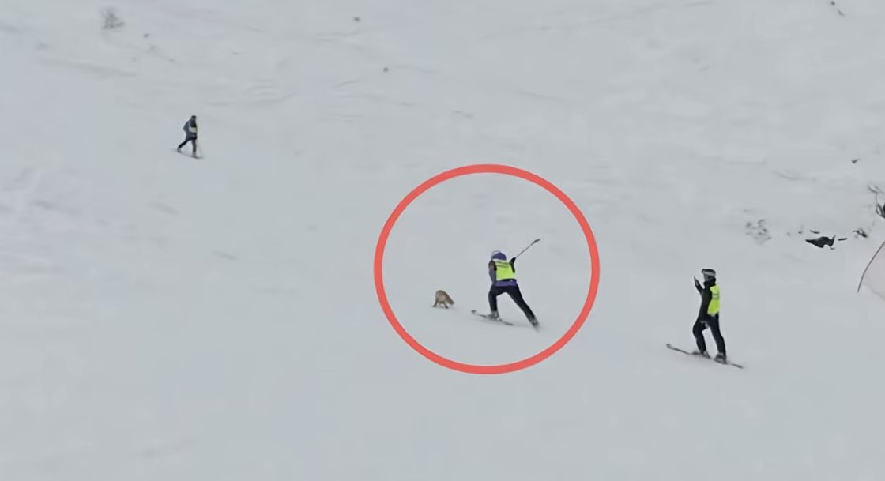

Жизнь — это движение.
@432Ifantrygroup
在野外遇到动物，除了猫和狗你都不要碰。最好猫也不要碰，因为中国花狸猫和家猫长得一模一样但是为国家二级保护动物。
包括各种鸟类，不是三有就是保护动物，不要手欠去打他们

作家崔成浩
@cuichenghao
近日，新疆阿勒泰一家滑雪场内出现一只保护动物赤狐，因有保护领地的举动，竟被滑雪场工作人员当场挥杆打死。 https://t.co/Kxy2cdMrht